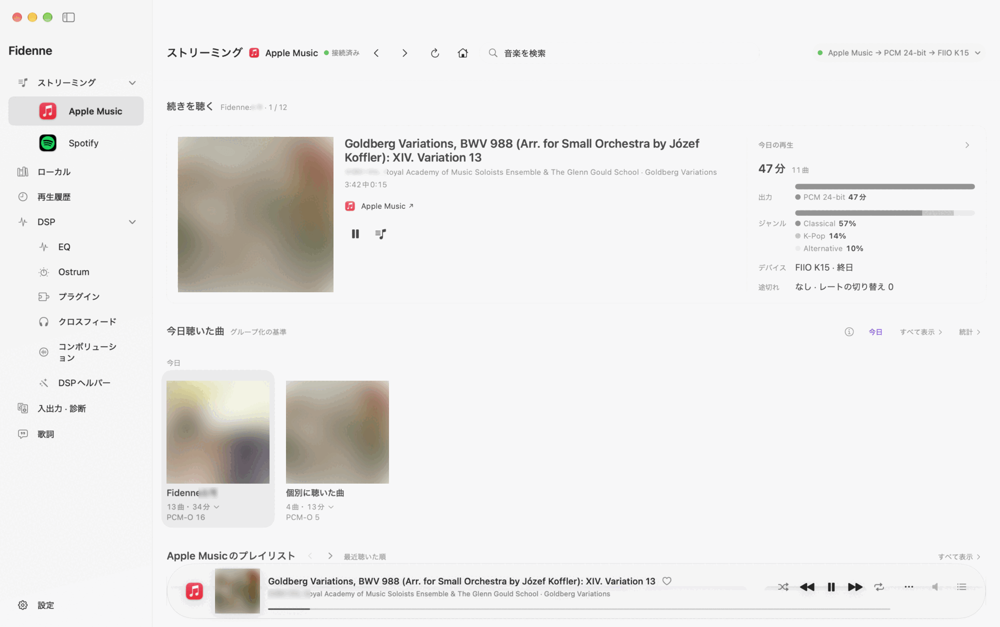
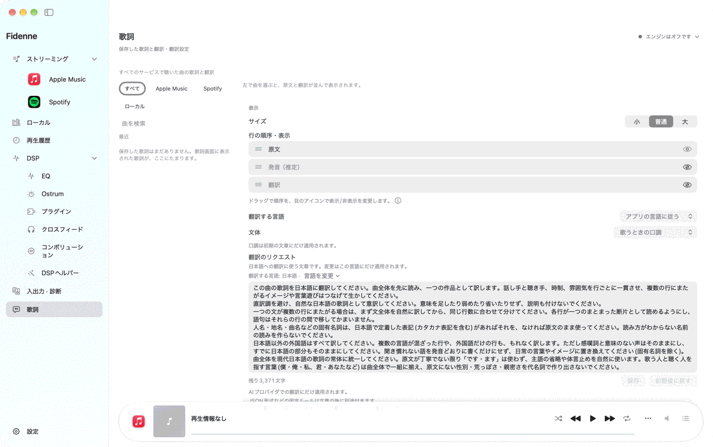
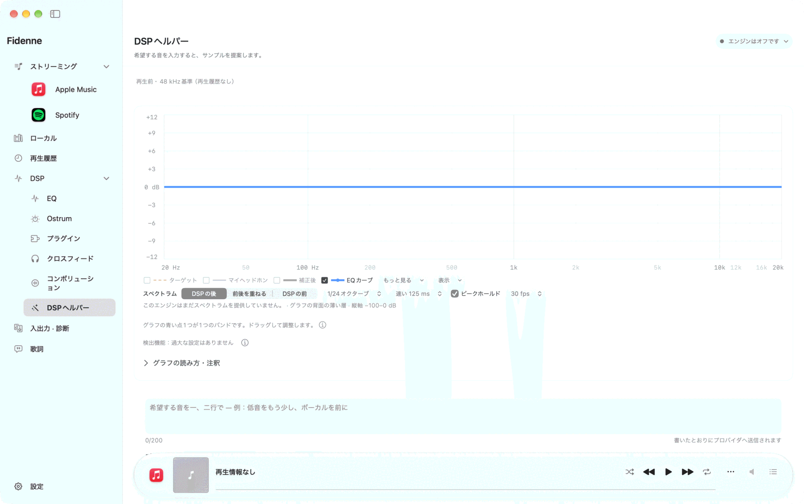
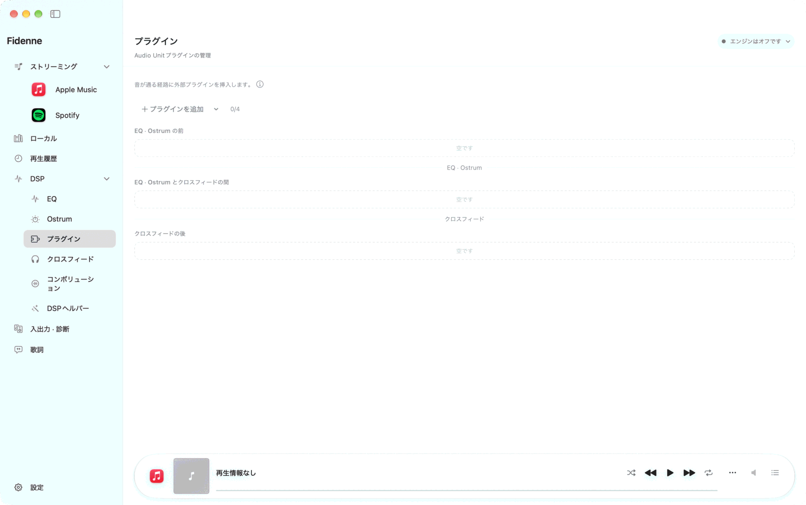
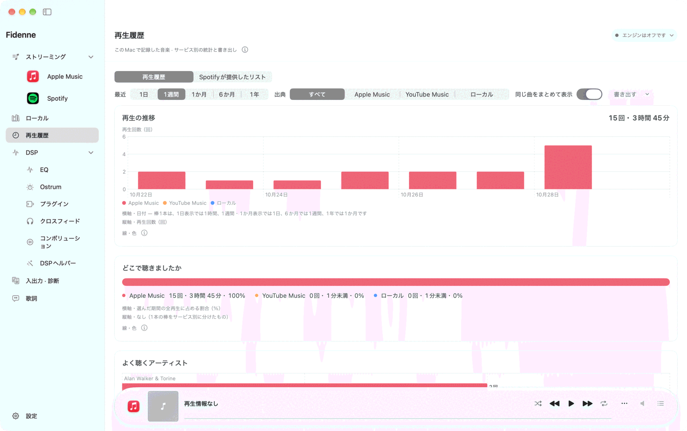
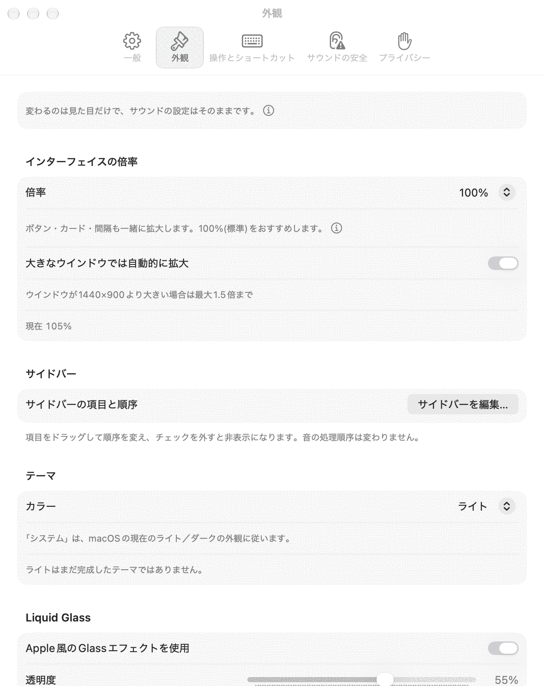

3つの言語、ライトとダーク
韓国語・English・日本語と、ライト・ダークの表示に対応します。アプリの言語はmacOSのアプリ別言語設定に従います。曲名とアルバム名は各サービスの表記のまま表示します。
Fidenne · 公開ベータ1 · 0.7.0
いつもの再生アプリのまま、EQ・Ostrum・クロスフィードで音を調整し、外付けDACへ送ります。音楽と歌詞、音が通る経路をひとつのウインドウで確認できます。
リリースを見るAppleシリコンMac · macOS 15以降 · 有線USB DAC推奨
まだ公開ベータのため、変わる部分や修正中の部分があります。ダウンロードと公開状況はリリースページで確認してください。

0.7
読みやすい画面、自分で選ぶ翻訳、自分で決める音の設定。
韓国語・English・日本語と、ライト・ダークの表示に対応します。アプリの言語はmacOSのアプリ別言語設定に従います。曲名とアルバム名は各サービスの表記のまま表示します。
原文・発音・翻訳の順序と表示を選び、発音の行を編集できます。翻訳先の言語ごとに文体を編集し、デフォルトに戻すこともできます。
DSPヘルパーに希望を伝え、3つの設定サンプルを受け取ります。各サンプルに感想を添えて再提案を依頼し、自分が選んだ設定だけを適用します。
Audio Unitエフェクトを音の処理経路に追加し、順序を入れ替えます。プラグイン専用の画面は、各カードの「エディタを開く」で別に開きます。Playback Chainで有効な処理と順序を確認できます。
初めて再生する前に、DACやアンプの音量を十分に下げてください。
M1以降のAppleシリコンMacとmacOS 15以降が必要です。外付けUSB DACをおすすめします。DSD出力には、選んだDSDレートに対応するDACが必要です。内蔵スピーカー・AirPods・HDMIでもFidenneが音を処理してPCMで送り、最後にmacOSがミックスして出力します。
リリースページから.dmgをダウンロードして開き、Fidenneをアプリケーションフォルダへ移動します。そのフォルダからアプリを開きます。
初回設定で出力先のDACを選びます。入力にはFidenne Inletまたはシステムタップを選びます。Inletは別途インストールが必要です。システムタップはインストール不要で、48 kHzで取り込みます。必要な権限は、機能を初めて使うときにmacOSが確認します。
再生アプリで曲を選びます。Fidenneの出力方式を確認し、開始時の案内に従います。音が出ることを確認してから、DACやアンプの音量を少しずつ上げます。
音楽ホームで最近聴いた曲やプレイリストを開き、ローカルライブラリではファイルを再生できます。再生は各サービスが行います。Apple MusicはMacのミュージックアプリ、SpotifyはSpotifyアプリ、YouTube Musicはブラウザ（Safari・Chrome・Edge）のタブが再生します。接続方法と操作できる内容はサービスによって異なります。
アートワークと歌詞、Playback Chainを一緒に表示します。音の処理欄もアルバム画面の他の欄と同じ背景を使い、歌詞と操作に集中できます。

歌詞ページでLRC・TXTファイルを関連付けるか、同意してLRCLIBから歌詞を検索します。原文・発音・翻訳の順序と表示を選べます。編集した発音はアルバム画面や他の歌詞表示にも反映され、推定された発音に戻すこともできます。
AI提供元とモデルを選び、翻訳先の言語の文体指示を編集します。デフォルトに戻すと、その言語の標準の文体に戻ります。文体は「歌うときの口調」（既定 — 歌詞のように一曲を一つの口調で）と「原文の口調に合わせる」（原文が丁寧語かどうかに従う）から選びます。韓国語への翻訳では英語表現を原文のままにします。以前のリクエストが移行された場合は、アプリの案内から内容を確認してください。設定を変えても保存済みの翻訳は自動で作り直しません。

DSPヘルパーで提供元とモデルを選び、リクエストを送ります。弱め・中程度・強めの3つのサンプルで変更される値を確認し、選んだものだけを適用します。各サンプルに感想を添えて、新しい3つのサンプルを依頼できます。ヘルパーが適用したサンプル同士の切り替えでは、不要な再操作を求めません。
依頼後に別の場所で値を変更した場合は、その値に影響するサンプルを適用する前に、変更項目と理由を確認します。適用は取り消せます。ヘッドルームの補正提案は別に判断できます。自動補正を許可している場合はPreampだけを下げます。0.7ではヘルパーの試聴機能は使えません。

EQはParametric・Minimum Phase FIR・Linear Phase FIRから選びます。OstrumではBass Sound・Mid-Hi Tune・Widthを調整します。クロスフィードは左右のチャンネルを混ぜる度合いを調整する機能で、0.7の該当ページ名もクロスフィードです。

入出力・診断で、PCM Direct、DSPを通すPCM出力（44.1〜768 kHz）、DSD変換を選びます。精密・安全・Trellisなどの変換方式は、選択した出力で利用できるものから選びます。CLANSは44.1 kHz系のDSD128・DSD256で使える試験方式です。Trellisは負荷が大きく、このMacが間に合わないと再生を止め、「変換方式を選ぶ」ボタンとともに精密・安全・CLANSをすすめます。問題があれば精密に戻してください。長いタップのフィルターにCardinal Sinc 128K・64K（追従版つき）があります。

プラグインページで、Macにインストールした対応ステレオAudio Unitエフェクトを追加します。各カードで有効・無効、位置と順序を選び、専用画面を開いて値を調整します。各エディタは個別に開閉できます。利用できる機能はプラグインと出力レートによって異なります。

再生履歴で以前聴いた曲と再生時間を確認できます。期間や時間の表記も選んだ表示言語に従います。履歴や統計に含まれる範囲はサービスによって異なります。

設定でテーマ・画面サイズ・操作方法・プライバシーの選択を変えます。韓国語・英語・日本語はmacOSのアプリ別言語設定で選びます。アプリの案内と時間表示はその言語に従い、サービスの曲情報は変更しません。

音が出ない場合は、まず入力・出力デバイスと出力方式を確認してください。解決しない場合はアプリからサポート用診断を出力し、内容を確認してサポートへメールで送ってください。アプリが代わりに送信することはありません。おかしいと感じた瞬間に⌥⌃⌘K（ヘルプ › 今おかしかったことを記録）を押すと、その時刻が診断記録に印として残り、見つけやすくなります。